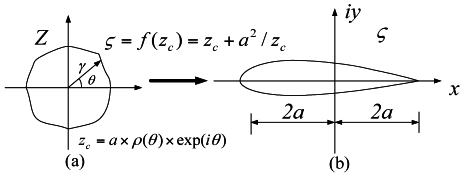
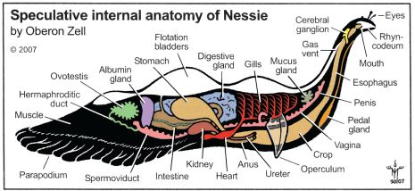

Structural Dynamics in Aeronautical Engineering

Communication is not possible. The shuttle has no power. Using the
gravitational pull of a star to slingshot back in time? We are going to
Starbase Montgomery for Engineering consultations prompted by minor read-out
anomalies. Probes have recorded unusual levels of geological activity in all
five planetary systems. Assemble a team. Look at records of the Drema
quadrant. Would these scans detect artificial transmissions as well as natural
signals?
I have reset the sensors to scan for frequencies outside the usual range. By
emitting harmonic vibrations to shatter the lattices. We will monitor and
adjust the frequency of the resonators. He has this ability of instantly
interpreting and extrapolating any verbal communication he hears. It may be
due to the envelope over the structure, causing hydrogen-carbon helix patterns
throughout. I'm comparing the molecular integrity of that bubble against our
phasers.
Exceeding reaction chamber thermal limit. We have begun power-supply
calibration. Force fields have been established on all turbo lifts and
crawlways. Computer, run a level-two diagnostic on warp-drive systems.
Antimatter containment positive. Warp drive within normal parameters. I read
an ion trail characteristic of a freighter escape pod. The bomb had a
molecular-decay detonator. Detecting some unusual fluctuations in subspace
frequencies.
Resistance is futile.
Structural Dynamics in Lake Monster Engineering

Communication is not possible. The shuttle has no power. Using the
gravitational pull of a star to slingshot back in time? We are going to
Starbase Montgomery for Engineering consultations prompted by minor read-out
anomalies. Probes have recorded unusual levels of geological activity in all
five planetary systems. Assemble a team. Look at records of the Drema
quadrant. Would these scans detect artificial transmissions as well as natural
signals?
Unidentified vessel travelling at sub warp speed, bearing 235.7. Fluctuations
in energy readings from it, Captain. All transporters off. A strange set-up,
but I'd say the graviton generator is depolarized. The dark colourings of the
scrapes are the leavings of natural rubber, a type of non-conductive sole used
by researchers experimenting with electricity. The molecules must have been
partly de-phased by the anyon beam.
I have reset the sensors to scan for frequencies outside the usual range. By
emitting harmonic vibrations to shatter the lattices. We will monitor and
adjust the frequency of the resonators. He has this ability of instantly
interpreting and extrapolating any verbal communication he hears. It may be
due to the envelope over the structure, causing hydrogen-carbon helix patterns
throughout. I'm comparing the molecular integrity of that bubble against our
phasers.
Resistance is futile.